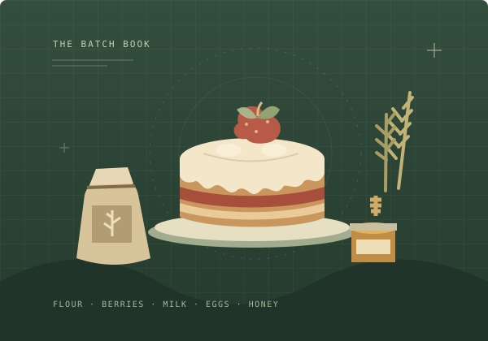

Count once.
Bake a batch.
Turn a cake target into an exact gathering list. Count what you have, set aside ready cakes, and let your wheat do its part.

What goes into your next batch?
Enter item counts, not stacks. Results update as you type. The sample pantry is just an example.
See the ingredient totals before milling
“Missing before milling” does not credit owned wheat. The gathering list above does. These are alternative views of the same batch, not lists to add together.
| Ingredient | Total required | On hand | Missing before milling |
|---|---|---|---|
| Flour | — | — | — |
| Red berries | — | — | — |
| Milk | — | — | — |
| Eggs | — | — | — |
| Honey | — | — | — |
Remembering is optional. Reset & forget deletes this tool’s saved plan. Reset shared preview changes only the temporary preview. Share links contain your counts. Privacy details
A better-prepared pantry.
Small details that keep a big batch from becoming an unnecessary gathering trip.
Start with what is already on the shelf.
Follow a seven-cake example from ready cakes to the final gathering list, including leftover wheat.
Read the field guide ↗NOTE 002 / THE MILLING MATHOne ingredient. Two ways to cover it.
Why ready flour and unprocessed wheat are counted separately, and how the limiting ingredient is found.
See the method ↗NOTE 003 / KNOW THE LIMITSA small, transparent recipe book.
One Normal Cake recipe, one milling conversion, and clear boundaries around what this tool knows.
Check data & sources ↗